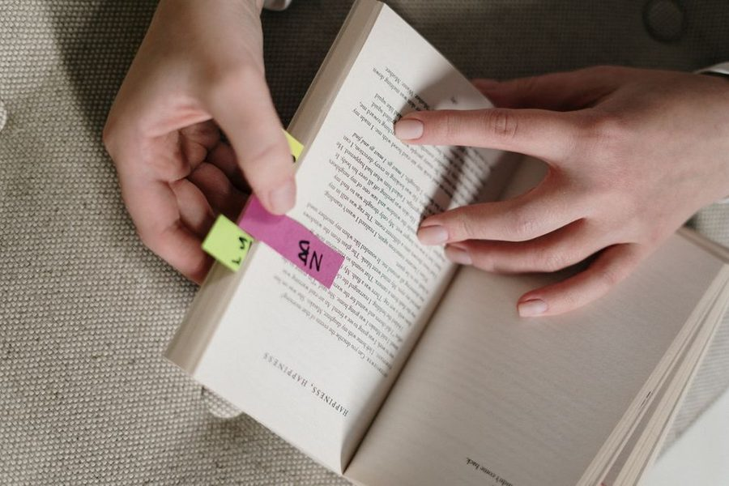
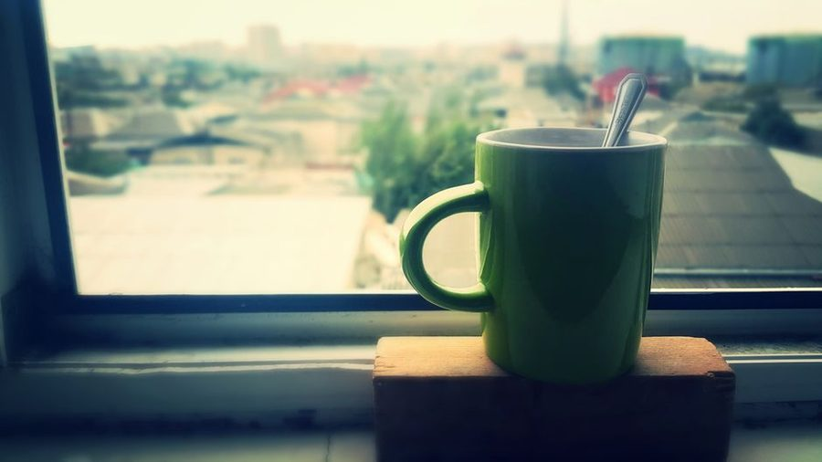

Journal / Notes
Reading notes you actually reuse
Most notes are written once and never opened again. A few simple constraints change that ratio more than any app ever will.

In short
- Own words plus a reason, not highlights.
- One idea per note; title it as a claim.
- Ten minutes a week to retitle and delete.
Highlighting is not note-taking
Marking a passage feels like work and produces almost nothing, because the marked text is still in the author's words and the author's structure. Six months later a page of yellow tells you that something mattered without telling you what you thought about it.
The minimum useful note is a sentence in your own words plus a reason it is worth keeping. The translation is where the understanding happens; the reason is what makes the note findable when you are looking for something else entirely.
One idea per note
Long summaries are hard to reuse because they mix five ideas that belong in five different contexts. Splitting them at capture — one idea, one short note, a title that states the idea as a claim — costs a minute and makes the note portable.
Titles as claims are underrated. "Meetings without a decision-maker produce second meetings" is a title you can find and drop into a draft. "Notes on meetings" is a title you will scroll past forever.
Link forward, not just backward
When writing a note, add a line about where it might be used: a project, an argument you keep having, a recurring question. That single line converts a library into a working set, because the note now points at a future rather than only at its source.
Do not build elaborate hierarchies. Folders age badly and the effort spent maintaining them is effort not spent writing. A flat pile of well-titled notes and a search box beats a beautiful tree nobody prunes.
A weekly ten minutes
Open the notes from the past week, fix the titles that turned out to be vague, and delete the ones that no longer say anything. Deleting is part of the practice — a collection you trust is one you have pruned. A hundred notes you trust beat a thousand you avoid opening.
The payoff arrives late and then all at once: the first time you sit down to write something difficult and find that half the argument already exists in eight notes you wrote months ago, the habit stops needing justification.
Capture is not the hard part
Everyone worries about capturing enough and almost nobody worries about retrieval, which is where collections actually fail. The question to ask of every new note is not "is this interesting" but "what would I be searching for on the day I need this?" — then put those words in the title.
Retrieval also improves when notes disagree with each other. A pile of confirmations is a comfortable and useless thing; two notes making opposite claims force the argument to be resolved in writing, and the resolution is usually the most valuable note of the three.
Finally, write for a stranger. Six months is long enough that you are one, and the abbreviation that felt obvious on a Tuesday afternoon will be a small archaeological puzzle by spring.
Reading with a question
Notes improve enormously when the reading has a purpose narrower than "learn about this". Holding a question — how do teams decide when to stop a project, what makes handovers fail — turns passive reading into a search, and searches produce notes naturally because you notice when something answers you.
Without a question, everything looks moderately interesting and the notes become a summary of the source rather than an extract of what you needed. Summaries are the least reusable artefact in the whole practice; they duplicate the original at lower quality.
It is fine for the question to change halfway through. Write the new one down at the top of the page — six months later, knowing what you were looking for is often more useful than the note itself.
Notes that become writing
The purpose of the collection is not the collection. It is the moment when a draft is due and half of the argument already exists, written by you, in your own words, months ago.
To make that moment likelier, keep the notes in the same format as the writing you do — prose sentences rather than bullet fragments. A bullet has to be rewritten before it can be used; a sentence can be pasted into a draft and edited, and that small difference decides whether the collection ever gets opened under deadline.
Once a month, take three notes that seem related and write four hundred words joining them. Most of what comes out will be discarded, but the exercise is the only reliable way to find out whether the notes are alive or merely stored.
The Thursday letter
One short piece a week — usually a method someone on the desk tried and either kept or dropped. No attachments, no course, no schedule creep.
Also on the desk

The first hour decides the day, and most of us give it away
Attention

The shutdown note: five lines that stop work following you home
Routines

Task lists that survive Tuesday
Planning